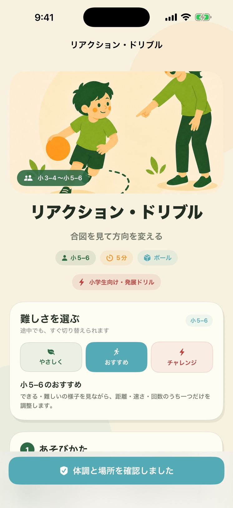

3〜12歳のお子さんと、保護者の方へ
今日の遊びが、
親子の時間に。
「今日は、何して遊ぼう？」
年齢や場所、使える時間と道具に合わせて。
今の親子にちょうどいい運動あそびを、
からだコネクトで見つけませんか。
App Storeで見る ↗
無料ダウンロード・アプリ内課金あり
iPhone / iOS 17以降 / 日本語
年齢に合わせて身近な場所と道具で親子のペースで
LET’S PLAY, TOGETHER
「できそう」が見つかる。
「もう一回」が生まれる。
上手にできることよりも、一緒に体を動かす時間を。
遊び探しから振り返りまで、親子の毎日をそっと支えます。
01 / FIND今日にぴったりの遊びを。
場所、時間、人数、道具を選択。
今できる遊びから、ひとつ選ぼう。
02 / EXPLORE好きから、世界が広がる。
基本の動きから競技のドリルまで。
あそび図鑑で、気になる遊びを探そう。
03 / PLAYやり方がわかると、楽しい。
難しさ、必要な道具、遊び方を確認。
準備と安全を確かめたら、遊んでみよう。

掲載画像はApp Storeで公開中のアプリ画面です。表示内容はバージョンや設定によって異なる場合があります。
小さな遊びを、親子の習慣に。
01条件に合わせて選ぶ
場所、時間、人数、使える道具を選ぶと、今日に合う遊びを提案。遊びの詳細で準備や安全上の注意を確認できます。
02親子のペースで続ける
12種類の親子4週間コースと、場面別のおうち遊びパックを用意。コースは全12回を、自分たちのペースで進められます。
03遊んだあとを振り返る
子どもの感想と大人の振り返りを記録。40本の保護者向け声かけメモも、親子で遊ぶときのヒントになります。
まずは、無料で試せます
無料で使えること
- 年齢や条件に合う無料の運動あそび
- 各コースの最初の3回を、対象の無料遊びで体験
- 40本の声かけメモ、活動の記録と振り返り
条件によっては、対象となる無料の遊びがない場合があります。3回を終えても自動で課金されません。
もっと遊びたい方へ
- 有料の運動あそび
- コース4〜12回目の進行・提案
- 月額と買い切りで、使える機能は同じ
月額500円（自動更新）/ 買い切り5,000円
購入は保護者の方が行ってください。年齢・道具などの条件は購入後も適用されます。
日本のApp Store向けの案内です。購入前に、アプリ内とApp Storeの確認画面で最新の価格・条件をご確認ください。
ご利用中の方へ
使い方や購入の復元、データの取り扱いをご案内します。
安心して使うために
アカウント登録は不要です。プロフィールと運動記録は利用中のiPhone内だけに保存され、クラウド同期はありません。アプリを削除すると記録も削除されます。
必ず保護者が体調・場所・用具を確認し、無理のない範囲で遊んでください。本アプリは運動能力の診断や医療行為を行うものではありません。
詳しい使い方・安全上の注意 / プライバシーポリシー